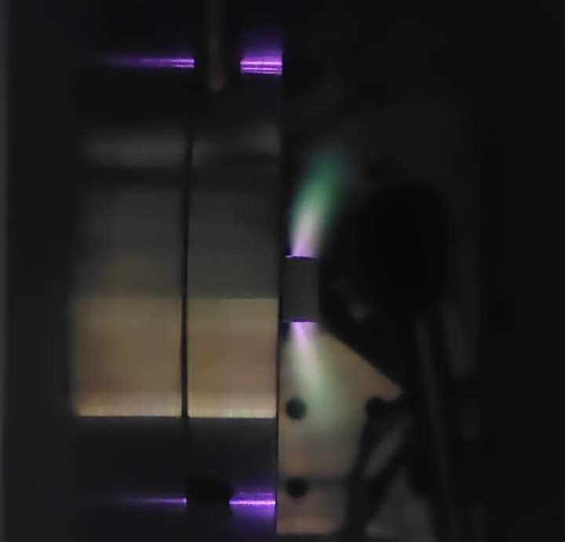
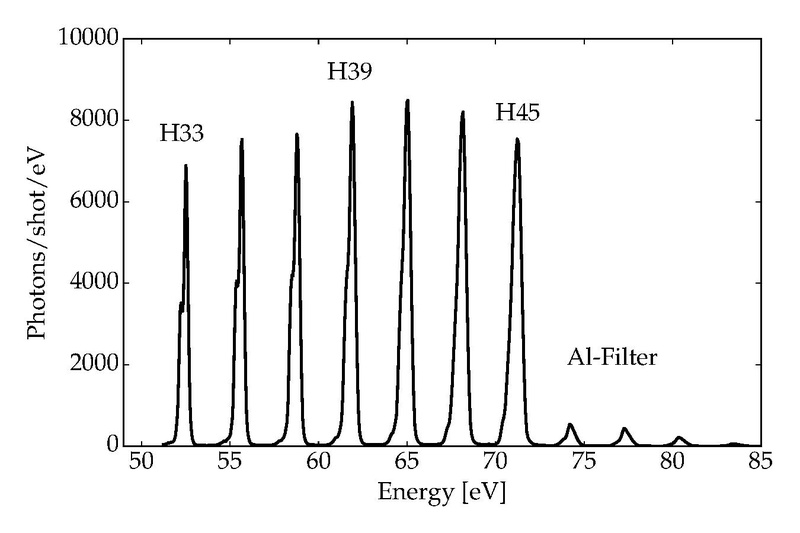

Research Interests
I'd describe my interests as, "I like the extremes of physics." The ultrafast, the ultraenergetic, the ultrasmall, etc.
Ultrafast AMO
My primary interest is most definitely in ultrafast atomic, molecular, and optical physics.
Dr. Mette Gaarde at LSU introduced me to this field back when I joined her group in my freshman year and I've been in love with it ever since!
Of course, I can't go without offering a round of applause this year's (2023) Nobel Prize winners, whom our group has ties to. Attosecond science is one of those fields that, at first, sounds like a super niche area of physics (at least, I had never heard of it before joining the group). But after learning about it, I realized just how potentially impactful this field is. It's one of the only ways of generating high-precision XUV light, something heavily sought after in numerous industrial and medical fields.
{HHG in Krypton! (Looks like Wikipedia heavily updated the HHG page since I last checked.) From Wikipedia.}
I currently study High Harmonic Generation (HHG), which is the basis of attosecond pulses. HHG occurs when a molecule is irradiated with a very strong (~TW/cm^2 level intensity) laser, resulting in tunnel ionization. The ionized electron accelerates in the laser's electric field before recombining with the molecule, emitting tens of harmonic orders of XUV light.
{An example HHG spectrum, from Wikipedia.}
Quantum Optics and Computing
Generally speaking, I really like quantum mechanics. Oh, and optics. And computers. Naturally, I find these fields incredibly interesting.
While U-AMO is still my favorite, these are fields that I wouldn't mind doing research in or going down rabbit holes of information about it.
High-Energy Particle Physics
I'm more of an AMO person than a Nuclear person (mainly in terms of research styles) but I can't deny the rush of hitting ultraenergetic particles together and seeing what happens. What I'd really like to research in this field are elementary particles. Quarks, gluons, neutrinos... I just want to see what the absolute smallest things in existance are.